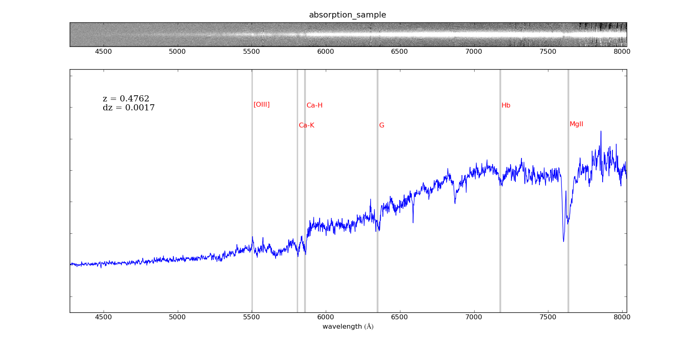
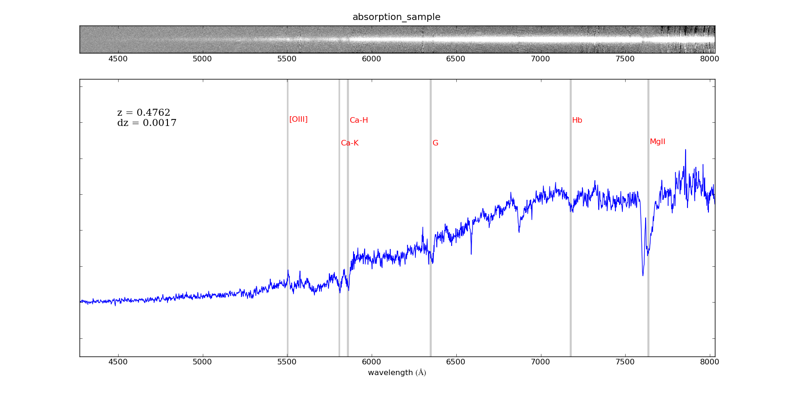

|
plotspec is a simple,
stand-alone, spectral plotting tool. It allows the display of one or
several 1d spectra below the corresponding 2d
spectrum, with both plots matched in wavelength. It can also display
the location of emission and/or absorption lines that can either be
supplied by the user or taken from the default set incorporated in the
code. Additionally, these lines can be redshifted by a user-supplied
value. At the bottom of this page you'll find examples of an
emission-line and an absorption-line example spectra. You can
download the data that was used to create the plots shown by clicking
in the figures.
Usage:
./plotspec
<parameter1>=<value1>
<parameter2>=<value2>
...
The code takes the following command-line
parameters:
Arguments:
file1d
type: string
parameter: If fileroot is provided, then this is the suffix of the 1d spectrum
file, with root fileroot. Otherwise, this is the full
name of the 1d spectrum. The ".fits"
extension is automatically added to the end of the filename.
Optional:
file2d
type: string
default: ' '
parameter: If fileroot is provided, then this is the suffix of the 2d spectrum
file, with root fileroot. Otherwise, this is the full
name of the 2d spectrum.
The ".fits" extension is automatically added to the
end of the filename. If this is not provided, only the 1d spectrum
is displayed.
fileroot
type: string
default: ''
parameter: A root common to the 1d spectrum filename and the 2d spectrum filename.
If fileroot is provided but not file1d or file2d,
file1d=fileroot+'e' and file1d=fileroot+'s'.
z
type: float
default: 0
parameter: The redshift to which the lines will be moved, i.e. this should be the
redshift you expect the source to be at.
cz
type: float
default: 0
parameter: The cosmological velocity, c*z, to which the lines will be
moved (if z is provided, this entry is ignored). Note: c = 299792.458 km/s.
dv
type: float
default: 500
parameter: The width of the lines to be shown, in km/s.
figtitle
type: string
default: ''
parameter: A title to print in the plot (e.g. the name of the object).
Only takes non-spaced strings for now.
linefile
type: string
default: ''
parameter: Text file containing the lines that will be plotted with the spectrum.
The format of the file is two columns (space-or tab-separated), the first being the rest-frame
wavelength and the second being the name of the line. Lines can be
commented with the '#' character. If the file is not provided, a default set of lines
including the most common ones (from ~100 to ~700 nm) will be displayed.
tickspace
type: int
default: 500
parameter: Separation between ticks in the plot, in Angstrom.
z1
type: float
default: None
parameter: Lower limit, in counts, to plot. If not provided it is automatically
calculated as in ds9's zscale.
z2
type: float
default: None
parameter: Upper limit, in counts, to plot. If not provided it is automatically
calculated as in ds9's zscale.
contrast
type: float
default: 0.6
parameter: The contrast of the 2d image, as in ds9.
thresh
type: float
default: 20
parameter: Threshold, in units of sigma, to remove bad pixels from the 1d spectrum.
Make it higher if you expect strong emission lines. Only works for very high pixels (as
opposed to very negative ones).
linefill
type: float between 0 and 1
default: 0.8
parameter: Greyscale color of the shading around each line (with width equal to
dv), where 0 is black and 1 is white.
lheight
type: float between 0 and 1
default: 0.2
parameter: Relative height at which to place the names of the lines, with respect
to the maximum value of the spectrum.
|
 
